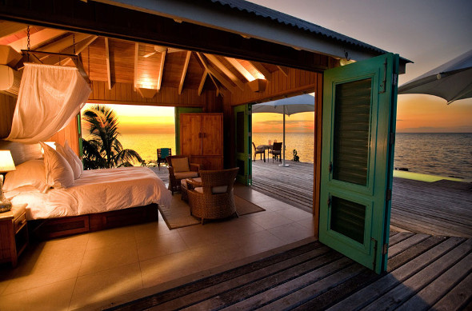

Featured on the cover of Conde Nast Traveler magazine, this romantic one-bedroom home is located directly on the beach and offers modern amenities, making it one of our favourite St. Martin villas. With the perfect blend of Caribbean hospitality and European sophistication combined with an eclectic nightlife, the island of St, Martin is a unique tropical getaway.

The terrace’s lush tropical vegetation allows you to relax on the terrace and pool deck in privacy. Stretch out on one of the comfy loungers or large daybed on the stone terrace while enjoying beach and panoramic sea views. The private pool with Italian marble steps is in the center of the patio and is a perfect spot to cool down or enjoy a romantic swim under the stars. There is additional seating on wicker patio furniture under the covered portion of the terrace.
Featured on the cover of Conde Nast Traveler magazine, this romantic one-bedroom home is located directly on the beach and offers modern amenities, making it one of our favourite St. Martin villas. With the perfect blend of Caribbean hospitality and European sophistication combined with an eclectic nightlife, the island of St, Martin is a unique tropical getaway.
The terrace’s lush tropical vegetation allows you to relax on the terrace and pool deck in privacy. Stretch out on one of the comfy loungers or large daybed on the stone terrace while enjoying beach and panoramic sea views. The private pool with Italian marble steps is in the center of the patio and is a perfect spot to cool down or enjoy a romantic swim under the stars. There is additional seating on wicker patio furniture under the covered portion of the terrace.
Completed in 2001, the interior of this modern home boasts an open-concept design with vaulted ceilings, elegant furnishings and a soothing color scheme. After a day of exploring, unwind on the couch and watch a movie on the large flatscreen TV. There’s a dining table located just behind the sofas, this area leads to the fully equipped kitchen where you’ll find all the necessary tools to prepare a great meal. At special request, a chef can come to prepare a delicious meal for two.
Comfortably sleeping two guests, the luxurious W Hotel King Size Bed is located on the right side of the villa and features French doors that lead directly out to the terrace. A bathroom is located across from the bed and boasts a large shower and double vanity sinks.
This home sits directly on the quiet Baie Rouge Beach. When you’re ready for a bit of excitement, the vibrant capital city of Marigot, is just a 10-minute drive away. Here you’ll discover gingerbread houses, sidewalk bistros, boutique shopping and excellent dining.
Please Note: Baie Rouge Beach may be affected by shifting seasonal currents and weather patterns. For the best swimming renters are recommended to walk down the beach near the public entrance where the waters are more protected.
- Air conditioned bedrooms, living room and kitchen
- 110v US and 220v European power
- HD Satellite Dish
- Netflix
- Smart TV
- Magic Jack (free calls to the US)
- Electric Gate
- Wi-Fi access
- Gilchrist and Soames Spa Therapy bath amenities provided daily
- Villa sound system (Indoors and outdoors)
- Kitchen:
- Stove
- Oven
- Microwave
- Refrigerator
- Freezer
- Ice Machine
- Blender
- Dishwasher
- Toaster
- Coffee Maker
- B.B.Q.
- Formal and pool side dinnerware
- Living Room:
- Plasma TV
- DVD
- Blue-ray
- DVD and Blue-ray movies
- Stereo Tape/CD
OUTDOOR FEATURES
- Swimming Pool (Solar heated)
- Pool floats
- Pool alarm
- Alfresco dining
- Plasma TV
- DVD
- Blue-ray
- DVD and Blue-ray movies
- Stereo Tape/CD
STAFF & SERVICES
Included:
- Gardener
- Housekeeper (6 days a week)
- Pool Service
- Laundry service
Extra Cost (advance notice may be required) :
- Villa Pre-stocking
- Activities and excursions
VILLA POLICIES
- Maximum 2 guests
- Children welcome
- No smoking on property
- No pets
- Washer and dryer are for staff use only
LOCATION Points of Interest:
- 5 minute drive to Marigot.
- 10 minute drive to nearest grocery store.
- 10 minute drive to airport.
- 10 minute drive to dining and nightlife.
Beaches:
- Beachfront on Baie Rouge